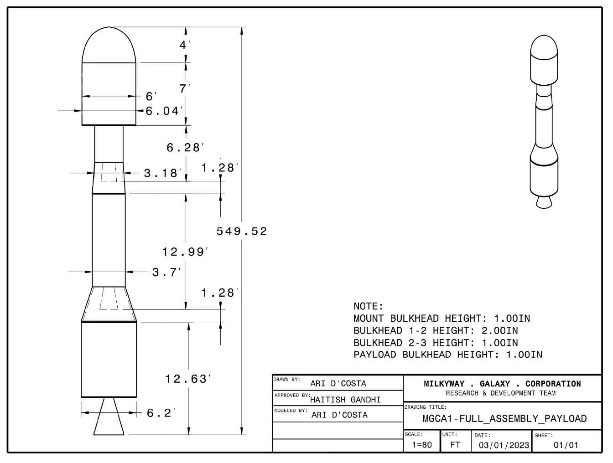

Academic Design / Structures & Simulation
MGC-A1 Launch Vehicle
A launch vehicle is a set of connected tradeoffs. Our team worked through them, from the payload requirement to the final structural layout.
- Payload requirement
- 650 lb
- Target altitude
- 150 nmi
- Selected architecture
- 3 stages
- Estimated launch mass
- 101,000 lb
01 / overview
Start with the payload.
For this introductory engineering project, our team developed MGC-A1, a conceptual solid-propellant launch vehicle for a 650 lb payload. The payload envelope, target altitude, and staging constraints set the starting point for the design.
My contribution focused on bulkhead design. That meant considering how the structure carries loads while staying consistent with the vehicle's geometry and mass budget. The wider team brought together motor selection, MATLAB sizing, trajectory modeling, and cost estimates.
This was an academic design and simulation study, not a manufactured or flight-tested rocket.

02 / structures
Follow the load path.
The design uses four bulkheads to support and connect the major vehicle sections. The lower structure uses ASTM A414 Grade H steel, while the upper payload structure uses aluminum 6063-T5 to reduce mass.
The first-to-second-stage bulkhead was increased from a nominal one-inch thickness to two inches to meet the report's stress requirement. That change illustrates the central trade: adding local strength also adds mass that the propulsion system must carry.
The final assembly drawing records those interfaces and dimensions in one place. It makes the design reviewable beyond a spreadsheet.


03 / simulation
Check the model, then question the margin.
The team iterated stage sizing and propulsion choices to reduce the estimated launch mass from the preliminary 173,450 lb configuration to about 101,000 lb. The final report compares ideal delta-v sizing with a separate trajectory simulation.
The ideal delta-v calculation closely matches its requirement, but that agreement is model closure, not proof of an orbital mission. The trajectory result remains below the target orbital speed.
| Check | Reported value | Interpretation |
|---|---|---|
| Ideal delta-v | 29,609 ft/s | Compared with a calculated requirement of approximately 29,607 ft/s. |
| Terminal velocity | 24,124 ft/s | 4.97% below the 25,385 ft/s target; within the coursework's 5% tolerance. |
| Burnout altitude | 151.5 nmi | Simulated altitude near the nominal 150 nmi target. |
| Estimated total cost | $14.2 million | Coursework cost model, not a supplier quote or program budget. |
04 / takeaways
A workable model still has open questions.
The report also identifies a third-stage height-to-diameter ratio of 2.95, slightly below its recommended minimum of 3. Together with the velocity shortfall, that is a reason for another design iteration rather than a claim that every requirement was met.
The project gave me a practical introduction to systems thinking through structures: changing one bulkhead affects mass, staging, performance, and cost. Keeping those connections visible was as important as getting the individual calculations done.